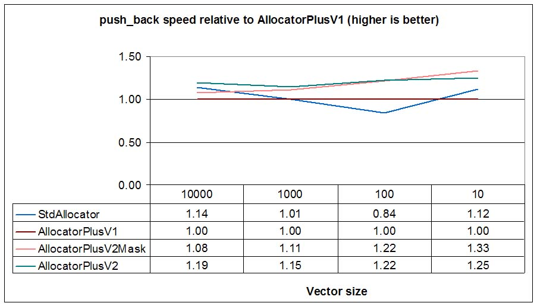
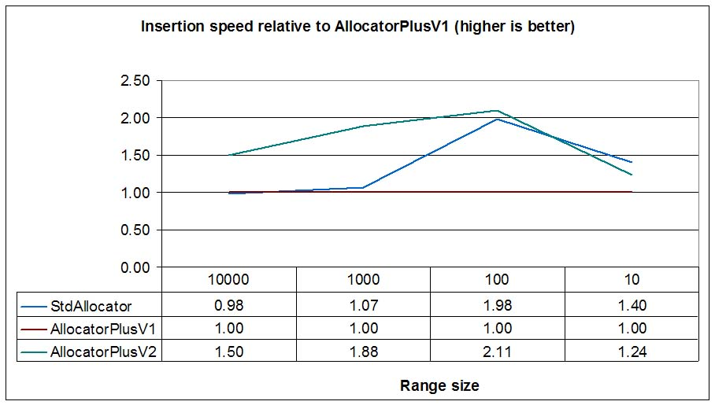
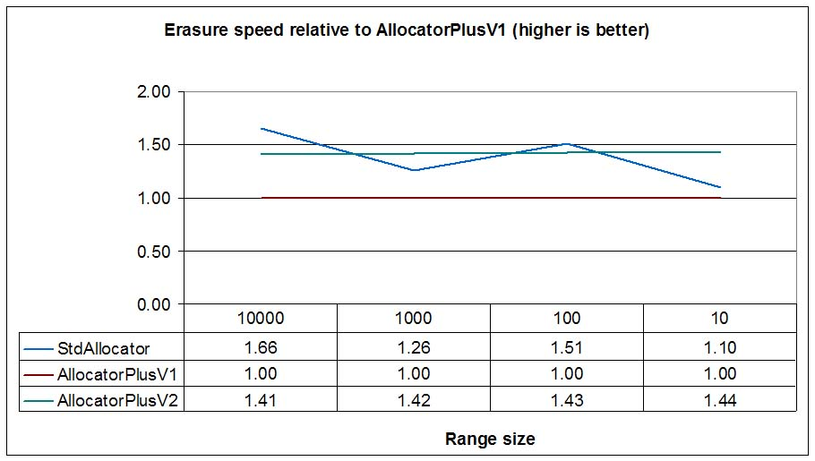
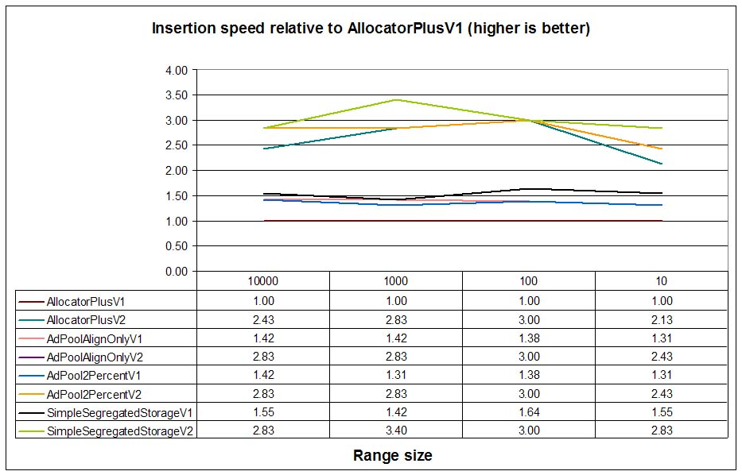
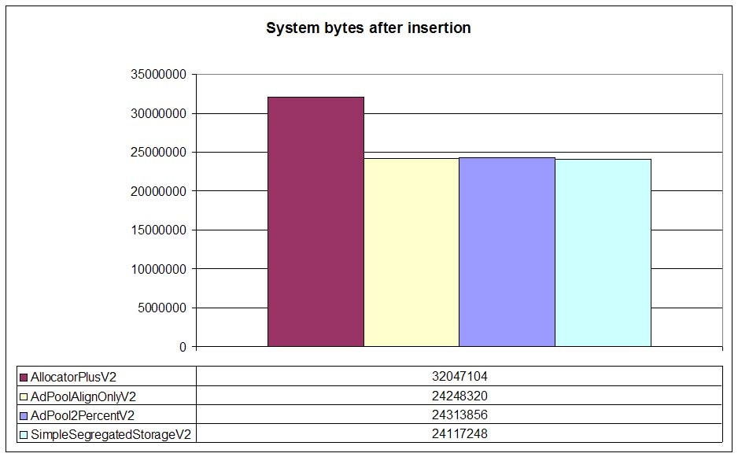
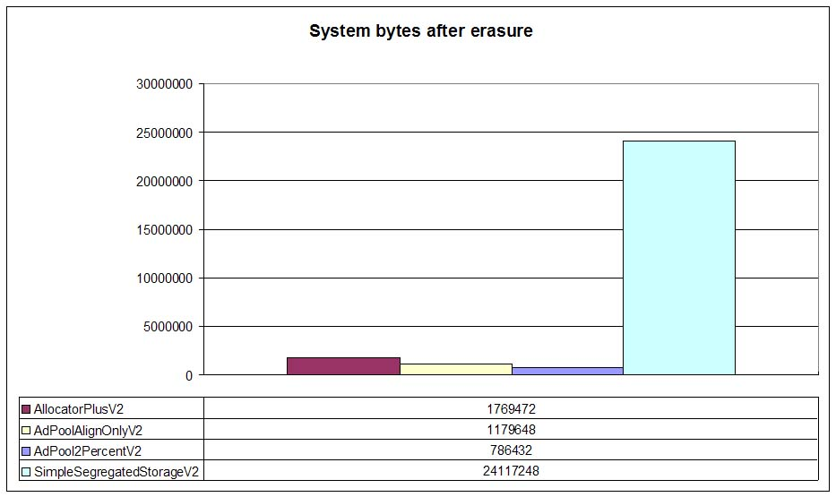

Ion Gaztañaga <igaztanaga@gmail.com>
vectorvectorvectorvector
I'm sure that many C++ programmers have ever wondered where does good old realloc
fit in C++. And that's a good question. Could we improve std::vector performance
using memory expansion mechanisms to avoid too many copies? But std::vector
is not the only container that could benefit from some classic strategies memory allocation: What if we
could take advantage of the insertion of multiple elements in std::list using
a burst allocation mechanism that could amortize costs (mutex locks, searches...) that
can't be amortized when using single node allocation strategies? Some space-saving
strategies also come to mind with node containers: Can we find a mechanism to build a
memory allocator that offers the size-saving benefits of a simple segregated storage
strategy (see Boost.Pool) without suffering
too big node pools when most of nodes have been deallocated?
This article will explain how some classic improvement strategies have been applied to C++ allocators. Many of these mechanism are being used for shared-memory allocators and containers (see Boost.Interprocess) where size restrictions are tighter than with heap allocators and other strategies (e.g. per-thread-pthread pools) are not applicable. So we'll be using Boost.Interprocess containers to measure the speed up that we can obtain when using those classic strategies in C++.
Obviously, these C++ allocators need some underlying general purpose allocator, since new and delete don't offer expansion and burst capabilities. In this article we'll use a modified Doug Lea Malloc, aka DLmalloc memory allocator with new basic functions that will offer the necessary underlying machinery to implement all these classic strategies. DLmalloc is known to be very size and speed efficient, and this allocator is used as the basis of many malloc implementations, including multithreaded allocators built above DLmalloc (See ptmalloc2, ptmalloc3 or nedmalloc ). So improvements obtained by the classic strategies applied to C++ will measure real-world speedups, even when the allocator is very efficient.
I've developed some additional classes, like STL allocators, pools and tests, I've put all this code under Boost Software license, and I've respected Boost guidelines so that the developed code can be considered integrated in the Boost Container..
vectorThere've been a couple of C++ proposal to add in-place expansion mechanisms to standard allocators (N1953: Upgrading the Interface of Allocators using API Versioning written by Howard Hinnant and N2045: Improving STL allocators written by me based on Hinnant's proposal). Unfortunately they didn't receive much interest in the committee but there is hope that we could get some of this functionality for C++1x if the C++ community shows some interest. Let's review a bit what these proposals said:
Hinnant's proposal adds some new functionalities to C++ allocators:
The first functionality is interesting to avoid wasting some precious bytes the memory
allocator adds in the end of the buffer due to alignment reasons or because its own
memory allocation algorithm. As an example, DLmalloc on 32 bit systems will need a
minimum of 16 bytes for every allocation (4 bytes are payload and 12 bytes are available
for the user): If we try to initialize std::string with a 4 character
narrow string ("abcd") we will waste 8 bytes, because we have no way to know
that there is room in our newly allocated buffer that could be used for longer strings
without going again through the allocator. Other allocators waste even
more memory. In 64 bit systems the minimum size (and thus, the waste) is bigger:
32 bytes (24 bytes available for the user) for DLmalloc.
The second functionality is the classical use case of realloc in C: instead of
allocating a new buffer, the programmer tries to expand the current one. If the
expansion succeeds, there is no need to copy data to the new buffer (in C++, that means
avoiding potentially costly copy-constructors). The third one is exactly the inverse: a
vector that has grown considerably has now a few elements, vector.capacity() is
much bigger than vector.size() and we'd like to return memory
to the system. Many programmers use the
shrink-to-fit trick to return memory to the system, but this trick needs
a possibly throwing copy, whereas a shrink to fit operation implemented
by the allocator would not need any copying at all.
The last functionality is really interesting because a vector increases its capacity
usually using a growth factor (usually 1.5f or 2.0f) to avoid too many reallocations. That is, when we insert
new objects in a vector and vector.capacity() == vector.size(), then the
vector allocates much more memory than the size needed to insert a new object. When
allocating new memory to insert a new object, limit size is size() + 1,
preferred size is size()*growth_factor and received size is the real
size of the buffer. When inserting a new element in a vector, is usually better to
expand the memory to hold the new element than to allocate a new bigger buffer.
N2045 makes some additions:
operator new and operator
new[].
The first addition is useful for embedded systems and other size-limited memories, like fixed-size shared memory. If a vector can only be expanded forward, then it can't reuse preceding free memory if that preceding memory is not big enough (that is, 1.5 or 2.0 times bigger than the current buffer). With backwards expansion, this limitation disappears and backwards expansion can be combined with forward expansion to optimize memory usage.
The vector has to copy elements backwards so backwards expansion needs exactly the same number of copies as a new allocation. Many times backwards expansion can be implemented very efficiently in some memory algorithms that have fast access to previous and next memory buffers. Backwards expansion also has some downsides:
sizeof(Type) == 12 can't be expanded backwards 16 bytes, because the
distance between the old beginning and the new beginning is not multiple of 12, and thus, the
old object will be partially overwritten and it can't be safely move-assigned.The second addition tries to compact in a single call several tries to expand or allocate memory because usually a vector will first try to expand memory and if this fails, it will try to allocate a new buffer. Since checking for expansion capabilities is quite fast comparing to mutex locking and other checks performed by the allocator, both functions can be combined in a single call.
The third addition (separating node and array allocation) is based on the fact that with
the addition of expansion functions, node allocators based classic segregated storage
pools won't be able to be allocators with expansion capabilities. This might not sound
like a big problem for pure-node containers like std::list but some hybrid
containers like std::unordered_map wouldn't be able to use both segregated
storage (for nodes) and expansion features (for the bucket array).
Furthermore, some allocators (see N2554 The Scoped Allocator Model (Rev 2)) can be propagated through containers, so having an allocator that can use in-place expansion capabilities and node-pooling capabilities is very interesting. And this can only be achieved if the allocator uses different functions for single element and array operations.
The last two additions are just optimizations to reduce locking and to minimize the number of allocation calls.
Hinnant's proposal was implemented in the Freescale (then Metrowerks) standard library (MSL) with great success. My approach was implemented in Boost.Interprocess. This article is an evolution of my last proposal but applying these techniques in a widely used heap allocator.
allocation_command. This is the
explanation of the function:
enum allocation_type
{
//Bitwise OR (|) combinable values
allocate_new = ...,
expand_fwd = ...,
expand_bwd = ...,
shrink_in_place = ...,
try_shrink_in_place = ...,
nothrow_allocation = ...
};
template<class T>
std::pair<T *, bool> allocation_command
( allocation_type command, std::size_t limit_size
, std::size_t preferred_size, std::size_t &received_size, T *reuse_ptr = 0);
Preconditions for this function:
command must contain at least of these values: shrink_in_place,
try_shrink_in_place, try_shrink_in_place, expand_fwd, expand_bwd or allocate_new.
command contains the value shrink_in_place it can't
contain any of these values: expand_fwd, expand_bwd,
allocate_new, try_shrink_in_place.
command contains the value try_shrink_in_place it can't
contain any of these values: expand_fwd, expand_bwd,
allocate_new, shrink_in_place.
command contains expand_fwd or expand_bwd, the
parameter reuse_ptr
must be non-null and returned by a previous allocation function.
command contains the value shrink_in_place,
the parameter limit_size
must be equal or greater than the parameter preferred_size.
command contains any of these values: expand_fwd or
expand_bwd, the parameter limit_size must be equal or less than the
parameter preferred_size.Which are the effects of this function:
command contains the value shrink_in_place,
(with optional additional nothrow_allocation) the function will
try to reduce the size of the memory block referenced by pointer reuse_ptr to the
value preferred_size moving only the end of the block. If it's not possible, it
will try to reduce the size of the memory block as much as possible as long as this results in
size(p) <= limit_size. Success is reported only if this results in preferred_size
<= size(p) and size(p) <= limit_size.
command contains the value try_shrink_in_place,
(with optional additional nothrow_allocation) the function will act as if
a shrink_in_place was demaned but it won't shrink the buffer. This function
is useful to know if a shrink operation will have success with the given parameters and
obtain in the parameter received_size a value that is guaranteed to succeed
as limit_size on a subsequent shrink in place operation. This function is
useful to know exactly how many objects a caller should destroy with the given
limit_size and preferred_size.
command only contains the value expand_fwd (with
optional additional nothrow_allocation), the allocator will try to increase the
size of the memory block referenced by pointer reuse moving only the end of the block to the
value preferred_size. If it's not possible, it will try to increase the size of
the memory block as much as possible as long as this results in size(p) >= limit_size.
Success is reported only if this results in limit_size <= size(p).
command only contains the value expand_bwd (with
optional additional nothrow_allocation), the allocator will try to increase the
size of the memory block referenced by pointer reuse_ptr only moving the start of
the block to a returned new position new_ptr. If it's not possible, it will try
to move the start of the block as much as possible as long as this results in size(new_ptr)
>= limit_size. Success is reported only if this results in limit_size <=
size(new_ptr).
command only contains the value allocate_new (with
optional additional nothrow_allocation), the allocator will try to allocate
memory for preferred_size objects. If it's not possible it will try to allocate
memory for at least limit_size
objects.
command only contains a combination of expand_fwd and
allocate_new, (with optional additional nothrow_allocation) the
allocator will try first the forward expansion. If this fails, it would try a new
allocation.
command only contains a combination of expand_bwd and
allocate_new (with optional additional nothrow_allocation), the
allocator will try first to obtain preferred_size objects using both methods if
necessary. If this fails, it will try to obtain limit_size
objects using both methods if necessary.
command only contains a combination of expand_fwd and
expand_bwd (with optional additional nothrow_allocation), the
allocator will try first forward expansion. If this fails it will try to obtain preferred_size
objects using backwards expansion or a combination of forward and backwards expansion. If this
fails, it will try to obtain limit_size
objects using both methods if necessary.
command only contains a combination of allocation_new, expand_fwd
and expand_bwd, (with optional additional nothrow_allocation) the
allocator will try first forward expansion. If this fails it will try to obtain preferred_size
objects using new allocation, backwards expansion or a combination of forward and backwards
expansion. If this fails, it will try to obtain limit_size
objects using the same methods.
received_size.
On failure the allocator writes in received_size a possibly successful limit_size
parameter for a new call.Throws an exception if two conditions are met:
nothrow_allocation.This function returns:
nothrow_allocation
the first member will be 0 if the allocation/expansion fails or there is an error in
preconditions.
Notes:
char
as template argument the returned buffer will be suitably aligned to hold any type.
char as template argument and a backwards expansion is
performed, although properly aligned, the returned buffer might not be suitable because the
distance between the new beginning and the old beginning might not multiple of the type the
user wants to construct, since due to internal restrictions the expansion can be slightly
bigger than the requested bytes. When performing backwards expansion, if you have already
constructed objects in the old buffer, it's important to correctly specify the type.Obviously, we need an underlying C function that offers these possibilities. I've added the following function to the modified dlmalloc library:
typedef struct boost_cont_command_ret_impl
{
void *first;
int second;
}boost_cont_command_ret_t;
boost_cont_command_ret_t boost_cont_allocation_command
( allocation_type command , size_t sizeof_object
, size_t limit_objects , size_t preferred_objects
, size_t *received_objects , void *reuse_ptr );
This function does the same job as allocation_command, so it takes the
same options and an additional parameter indicating the size of the object (specially
important for backwards expansion). This function does not throw exceptions because C
has no exceptions but other than these two issues, its use is exactly the same
as allocation_command.
To compare apples to apples, we just can't compare the standard allocator versus an
allocator based on DLmalloc with expansion capabilities. For this purpose we develop an
allocator (called, surprisingly, ba::allocator). Here's the declaration:
namespace boost {
namespace container {
template<class T, unsigned Version = 2, unsigned int AllocationDisableMask = 0>
class allocator;
} //namespace container {
} //namespace boost {
The first template parameter is the type of the objects to be allocated. The second is
the version of the allocator (see
N1953) for details. If Version is 1, then the allocator is a standard conforming
classic allocator around dlmalloc and dlfree with no
additional features. If Version is 2, then the allocator has expansion capabilities and
other features like specifying limit and preferred sizes and obtaining the real size of
an allocated memory, separated node and array allocations, etc...
The third parameter is a mask that can be used to disable some capabilities. For
example, specifying expand_bwd | expand_fwd will disable forward
and backwards expansion and the allocator will only provide new buffer allocations.
vector
Let's first present the class that will be used in our performance tests. It's a simple
wrapper over an int, with a copy constructor that realizes a job that will
be equivalent to most move-constructors in C++0x. Of course performance gains will be
bigger in copyable but non-moveable heavy objects, but I think this class is fair
enough.
class MyInt
{
int int_;
public:
MyInt(int i = 0) : int_(i){}
MyInt(const MyInt &other)
: int_(other.int_)
{}
MyInt & operator=(const MyInt &other)
{
int_ = other.int_;
return *this;
}
};
Now we'll push back an element one by one in a vector, and measure the time using Boost.DateTime:
unsigned int numalloc = 0, numexpand = 0, capacity = 0;
ptime tini = microsec_clock::universal_time();
for(unsigned int r = 0; r != num_iterations; ++r){
bi::vector<MyInt, IntAllocator> v;
v.reset_alloc_stats(); //Reset allocation statistics
for(unsigned int e = 0; e != num_elements; ++e)
v.push_back(e);
numalloc += v.num_alloc; numexpand += v.num_expand_fwd;
capacity = static_cast<unsigned int>(v.capacity());
}
ptime tend = microsec_clock::universal_time();
//...
We'll test 4 different allocators:
std::allocator<int>, the standard
allocator that comes with the C++ compilerba::allocator<int, 1>, a STL
conformant allocator around dlmalloc and dlfree.ba::allocator<int, 2, expand_bwd |
expand_fwd>, an allocator with capabilities to specify a limit size the
preferred size and real size of a buffer, but with expansion capabilities disabled.ba::allocator<int, 2>, a fully
equipped improved allocator. (Note: There is no need to disable backwards expansions because
forward expansion has always preference over new allocations and backwards expansion).
and we'll use several [num_iterations, num_elements] combinations: [10000,
10000], [100000, 1000], [1000000, 100] and [10000000, 10]
For each allocator we'll show the following information:
push_back speed (normalized to AllocatorPlusV1)
As we see in the picture, DLmalloc is faster than the standard allocator
provided by MSVC 7.1 (StdAllocator vs. AllocatorPlus). We also see that
V2 allocators call less times to allocator functions (for size=10, 4 times vs. 6 times),
because using the received_size parameter of allocation_command the
container can take advantage of the real size of the newly allocated small buffer.
For big sizes (size=10000), due to the expansion capabilities of AllocatorPlusV2, this is twice as fast as AllocatorPlusV2Mask and 2.5 times faster than the standard conforming, DLmalloc based AllocatorPlusV1. As we can see in the third graph, only AllocatorPlusV2 performs expand in place, whereas the rest only allocate new buffers.
Now we'll execute the same test in a Linux (Suse 10.1) virtual machine (VMWare 6) using gcc-4.1 compiler
and will check push_back times:
We see that the standard allocator is faster than our V1 (a standard conforming DLmalloc wrapper) by a small margin for some sizes and slightly slower for bigger sizes. That's because gblic malloc is based on ptmalloc2, which is actually based on DLmalloc, but uses per-thread-pools, so minimizes mutex locks.
Like in Windows, expand-in-place capable allocator is twice as fast as the V1 allocator, confirming that forward expansion offers a considerable speed up. This speed up will be noticeable in initialization phases when vectors are filled with many back insertions. The speed-up will be more noticeable if vector elements are elements with no move constructors (e.g. third-party classes than can't be updated with move semantics).
vectorHistorically backwards expansion has not been very used for allocation strategies, basically because it does not offer the speed improvements offered by forward expansion for usual vector implementations. Similarly to new allocation, we need to move old objects (an implementation might avoid data-moving if it manages uninitialized data in the beginning of the memory buffer, but that's not usual). Backwards expansion has the ability to reduce the peak memory used by the vector (while allocating new memory, the vector has to maintain the old buffer until copies data to the new one) effectively reusing free memory placed just before the buffer to be expanded.
As we've said before, the backwards expansion algorithm has to calculate the LCM (least common multiple) of the memory allocation alignment (8 bytes in DLmalloc) and the size of the object. For very efficient algorithms like DLmalloc, I've found that calculating the LCM using the traditional Euclidean algorithm was a big overhead that made backwards expansion considerably slower than new allocation. It's necessary to take advantage of the power of 2 memory alignment and implement optimizations for object sizes also power of 2 or multiple of 2, 4, or 8 bytes, and use optimized versions to calculate the LCM. Fortunately, these optimizations made backwards expansion slightly faster than a new allocation, making backwards expansion better than new allocation in every aspect.
To test backwards expansion we'll execute the same push_back test
using the following 4 allocators:
std::allocator<int>, the standard
allocator that comes with the C++ compiler
ba::allocator<int, 1>, a STL
conformant allocator around dlmalloc and dlfree.
ba::allocator<int, 2, expand_bwd |
expand_fwd>, an allocator with capabilities to specify a limit size the
preferred size and real size of a buffer, but with expansion capabilities disabled.
ba::allocator<int, 2, expand_fwd>,
a fully equipped improved allocator, that avoids forward expansion (forward expansion
has priority over backwards expansion, so we need to disable it to only measure backwards
expansion).And now in a Linux (Suse 10.1) virtual machine (VMWare 6) using gcc-4.1 compiler:

We see that for most cases backwards expansion (AllocatorPlusV2) is slightly faster than new
allocation (AllocatorPlusV1) and new allocation with received_size capabilities
(AllocatorPlusV2Mask).
vector
The
Shrink-to-fit is a widely used idiom that can be improved with the shrink_in_place"
option provided by allocation_command method. To test this function we'll use the following test:
const std::size_t Step = 5;
ptime tini = microsec_clock::universal_time();
typedef boost::interprocess::detail::integral_constant
<unsigned, boost::interprocess::detail::version<Allocator>::value> alloc_version;
for(unsigned int r = 0; r != num_iterations; ++r){
//Create a vector with num_elements size
bi::vector<MyInt, IntAllocator> v(num_elements);
v.reset_alloc_stats();
//Empty the vector erasing the last Step elements and calling shrink_to_fit()
for(unsigned int e = num_elements; e != 0; e -= Step){
v.erase(v.end() - Step, v.end());
v.shrink_to_fit();
}
}
ptime tend = microsec_clock::universal_time();
That is, we'll initialize the vector with an initial size and will erase the last Step elements (5 in this case),
and shrink to fit the capacity of the vector. We'll repeat this operation for different
[num_iterations, num_elements] combinations: [100,
10000], [1000, 200] and [10000, 500]
To test shrink to fit we'll execute the test using the following 3 allocators:
std::allocator<int>, the standard
allocator that comes with the C++ compiler
ba::allocator<int, 1>, a STL
conformant allocator around dlmalloc and dlfree.
ba::allocator<int, 2, expand_fwd>,
a fully equipped improved allocator with shrink to fit capacity.
As the initial vector size grows, AllocatorPlusV2 shines (up to 90 times faster!)
because a shrink to fit operation is a no-throw
operation that can have amortized constant-time complexity due to the fact that an allocator usually implements
shrink to fit with a deallocation: the allocator divides the old buffer in two independent buffers and
deallocates the second buffer. On the other hand, vectors with allocators with no shrink to fit functionality
need to allocate a new buffer, move elements to the new one (moving elements is a linear operation
with the size of the vector) and deallocate the old buffer.
Now we'll execute the same test in a Linux (Suse 10.1) virtual machine (VMWare 6) using gcc-4.1 compiler
and will check push_back times:
Result are similar to Windows results, with AllocatorPlusV2 shinning more and more when initial vector
size grows.
Many times, operations can be performed faster if they are packed in groups, because some
costs are not related to the number of operations, but to the number of groups. An example
of this operations is the template
operation in vectors. If Iterator is a forward iterator, most implementations
calculate the distance between begin and end so that they know
the size of the buffer needed to hold all those elements. With this information, they only
perform one allocation to insert all the range.
Other containers can't take advantage of this possibility because they are node containers, meaning that each element is obtained with a call to the allocator that allocates a single element. Since each element has its own independent memory, these containers offer stronger iterator validity guarantees and pointers and references to inserted objects are not easily invalidated. On the other hand, inserting N elements in those containers, require N calls to the allocator.
To solve this, the idea is to have a function that could allocate a lot of objects in a single call, guaranteeing that each object can be individually deallocatable. Some memory management algorithms offer this possibility, even with the possibility to specify a different buffer size for each operation in a group. For example, DLmalloc offers the following two functions:
void** independent_calloc(size_t n_elements, size_t element_size, void*chunks[]);
Explanation: independent_calloc is similar to calloc, but instead of returning a
single cleared space, it returns an array of pointers to n_elements
independent elements that can hold contents of size elem_size, each
of which starts out cleared, and can be independently freed,
realloc'ed etc. The elements are guaranteed to be adjacently
allocated (this is not guaranteed to occur with multiple callocs or
mallocs), which may also improve cache locality in some
applications. [...]
void** independent_comalloc(size_t n_elements, size_t sizes[], void* chunks[]);
Explanation: independent_comalloc allocates, all at once, a set of n_elements
chunks with sizes indicated in the "sizes" array. It returns an array of pointers to these elements,
each of which can be independently freed, realloc'ed etc. The elements are guaranteed to be
adjacently allocated (this is not guaranteed to occur with multiple callocs or mallocs),
which may also improve cache locality in some applications. [...]
For these two functions each element must be individually freed when it is no longer needed and objects are guaranteed to be contiguously allocated (to help cache locality). Also, the "chunks" argument is optional (i.e., may be null, which is probably the most typical usage). If it is null, the returned array is itself dynamically allocated and should also be freed when it is no longer needed. Otherwise, the chunks array must be of at least n_elements in length. It is filled in with the pointers to the chunks.
According to DLmalloc documentation independent_calloc
simplifies and speeds up implementations of many
kinds of pools. It may also be useful when constructing large data
structures that initially have a fixed number of fixed-sized nodes,
but the number is not known at compile time, and some of the nodes
may later need to be freed:
struct Node { int item; struct Node* next; };
struct Node* build_list() {
struct Node** pool;
int n = read_number_of_nodes_needed();
if (n <= 0) return 0;
pool = (struct Node**)(independent_calloc(n, sizeof(struct Node), 0);
if (pool == 0) die();
// organize into a linked list...
struct Node* first = pool[0];
for (i = 0; i < n-1; ++i)
pool[i]->next = pool[i+1];
free(pool); // Can now free the array (or not, if it is needed later)
return first;
}
According to DLmalloc documentation independent_comalloc
can be used to speed up allocation in cases where several structs or
objects must always be allocated at the same time:
struct Head { ... }
struct Foot { ... }
void send_message(char* msg) {
int msglen = strlen(msg);
size_t sizes[3] = { sizeof(struct Head), msglen, sizeof(struct Foot) };
void* chunks[3];
if (independent_comalloc(3, sizes, chunks) == 0)
die();
struct Head* head = (struct Head*)(chunks[0]);
char* body = (char*)(chunks[1]);
struct Foot* foot = (struct Foot*)(chunks[2]);
// ...
}
Unfortunately, these two functions have some downsides when working with some containers:
list is forced to allocate an
array to hold pointers to these nodes) and imposes an unnecessary overhead to node containers.The first issue (the required external or internally allocated array) can be avoided if every memory node is linked with an intrusive singly linked list and offering an iterator-like interface. The intrusive list is built in the first bytes reserved for the user data because the minimum node size guarantees 12 bytes for 32 bits systems and 24 bytes for 64 bit systems. Obviously, once the user has overwritten that memory, there is no way to iterate to the next node so the programmer must be careful. Let's present these new functions:
These functions offer an emulation of a C++ input iterator./* Iterator functions */ typedef /**/ multialloc_it_t;/* Iterator type */ BOOST_CONTAINER_INIT_END_IT(IT)/* Postcondition: BOOST_CONTAINER_IS_END_IT(IT) != 0 */ BOOST_CONTAINER_IS_END_IT(IT)/* Is an end iterator? */ BOOST_CONTAINER_NEXT_IT(IT)/* operator ++ emulation */ BOOST_CONTAINER_ADDR_IT(IT)/* operator* emulation, returns the address of the memory */
These functions offer the possibility of building an intrusive chain (list) of nodes previously allocated by DLmalloc and obtain an iterator that can traverse them. These functions are used to build a range that can be deleted in a single call using with/* Multiallocation chain functions */ typedef /**/ multialloc_it_chain_t;/* Chain type */ BOOST_CONTAINER_IT_CHAIN_INIT(CHAIN)/* Postcondition: BOOST_CONTAINER_IT_CHAIN_IT(IT_CHAIN) is end it */ BOOST_CONTAINER_IT_CHAIN_PUSH_BACK(CHAIN, MEM)/* Push back the node MEM in the intrusive linked list chain */ BOOST_CONTAINER_IT_CHAIN_PUSH_FRONT(CHAIN, MEM)/* Push front the node MEM in the intrusive linked list chain */ BOOST_CONTAINER_IT_CHAIN_SPLICE_BACK(CHAIN, CHAIN2)/* Splice chain2 in the end of the first chain */ BOOST_CONTAINER_IT_CHAIN_IT(IT_CHAIN)/* Return an input iterator that traverse the chain */ BOOST_CONTAINER_IT_CHAIN_SIZE(IT_CHAIN)/* Returns the size of the chain */
boost_cont_multidealloc() (See below).
/* Some defines for "contiguous_elements" parameters */ DL_MULTIALLOC_ALL_CONTIGUOUS/* Allocate all elements contiguous on memory */ DL_MULTIALLOC_DEFAULT_CONTIGUOUS/* The implementation chooses the maximum contiguous elements /* Burst allocation: Allocates "n_elements nodes" of size "elem_size" with a maximum (if possible) of "contiguous_elements". On success returns an input iterator. On failure returns an "end" iterator.*/ multialloc_it_t boost_cont_multialloc_nodes (size_t n_elements, size_t elem_size, size_t contiguous_elements);/* Burst allocation: Allocates "n_arrays" of elements, whose size is "sizeof_element" and whose lengths are specified in the "sizes" parameter. Contiguous memory won't be (if possible) bigger than "contiguous_elements"*sizeof_element. On success returns an input iterator. On failure returns an "end" iterator.*/ multialloc_it_t boost_cont_multialloc_arrays (size_t n_arrays, const size_t *lengths, size_t sizeof_element, size_t contiguous_elements);/* Burst deallocation: deallocates all the range specified by the iterator */ void boost_cont_multidealloc(multialloc_it_t it);
boost_cont_multialloc_nodes is a function that allocates multiple nodes of the same size in the same call returning
an iterator to the range. is a function that allocates multiple arrays in the same call returning
an iterator to the range. The user can specify the (suggested) contiguous number of elements in both functions.
boost_cont_multidealloc deallocates a range of arrays or nodes that have been allocated
by boost_cont_multialloc_nodes, boost_cont_multialloc_arrays or allocated by other DLmalloc functions and
chained using BOOST_CONTAINER_IT_CHAIN_XXX functions.
Now that we have a low-level swiss knife we can define a C++ interface for burst allocation:
template<class T>
class allocator
{
//...
typedef /**/ multiallocation_iterator; //wrapper over multialloc_it_t
typedef /**/ multiallocation_chain; //wrapper over multialloc_chain_t
//------------------------------------------------------------------
// Functions for array allocation (expandable memory)
//------------------------------------------------------------------
//Allocates many elements of size elem_size in a contiguous block
//of memory. Elements must be individually deallocated with deallocate()
multiallocation_iterator allocate_many(size_type elem_size, size_type n_elements);
//Allocates n_elements elements, each one of size elem_sizes[i]
//Elements must be individually deallocated with deallocate()
multiallocation_iterator allocate_many(const size_type *elem_sizes, size_type n_elements);
//Deallocates the memory arrays pointed by the iterator range starting at it
void deallocate_many(multiallocation_iterator it);
//------------------------------------------------------------------
//Functions for node (size == 1, non-expandable memory) allocation
//------------------------------------------------------------------
//Allocates many elements of size == 1.
//Elements must be individually deallocated with deallocate_one()
multiallocation_iterator allocate_individual(size_type num_elements);
//Deallocates the memory nodes pointed by the iterator range starting at it
void deallocate_individual(multiallocation_iterator it);
};
Burst allocation also follows the separation between node (size == 1) and array allocation functions
so that node allocation can use segregated storage mechanisms, whereas array allocation can use
another approach that can be used with expansion functions (allocation_command).
We have all that we need to implement burst allocation and deallocation for STL containers. Now, let's measure if this leads to any speed improvement.
A good place to take advantage of burst allocation is range insertion. Other operations(range assignment, copy construction) are also good places to implement burst allocation. So let's try this code with several allocators to test insertion time:
tini = microsec_clock::universal_time();
bi::list<MyInt, IntAllocator> l;
for(unsigned int r = 0; r != num_iterations; ++r){
l.insert(l.end(), num_elements, MyInt(r));
}
tend = microsec_clock::universal_time();
That is, we'll try insertions of different range sizes (num_elements) and different
iterations (num_iterations). We'll end up with the same number of elements in the
list, so we can compare results easier. To measure burst deallocation we'll preprocess several
iterator ranges and measure the time to completely empty the list:
//Now preprocess ranges to erase
std::vector <typename bi::list<MyInt, IntAllocator>::iterator> ranges_to_erase;
ranges_to_erase.push_back(l.begin());
for(unsigned int r = 0; r != num_iterations; ++r){
typename bi::list<MyInt, IntAllocator>::iterator next_pos(ranges_to_erase[r]);
std::size_t n = num_elements;
while(n--){ ++next_pos; }
ranges_to_erase.push_back(next_pos);
}
//Measure range erasure function
tini = microsec_clock::universal_time();
for(unsigned int r = 0; r != num_iterations; ++r){
l.erase(ranges_to_erase[r], ranges_to_erase[r+1]);
}
tend = microsec_clock::universal_time();
As shown, a good place to take advantage of burst allocation is range erasure along with clear() and destructors.
We'll test 3 different allocators:
std::allocator<int>, the standard
allocator that comes with the C++ compilerba::allocator<int, 1>, a STL
conformant allocator around dlmalloc and dlfree (no burst allocation).ba::allocator<int, 2>, burst-allocation capable
allocator.[num_iterations, num_elements] combinations: [200,
10000], [2000, 1000], [20000, 100] and [200000, 10]
For each allocator we'll show the following information:
The graph shows that allocation speed per element is constant for AllocatorPlusV1 (surprisingly, not so constant for
Visual's standard allocator) and this is pretty logical since each element needs an allocation. AllocatorPlusV2 is
using DL_MULTIALLOC_DEFAULT_CONTIGUOUS which allocates contiguous nodes up to 4096 bytes. That's why
AllocatorPlusV2 performance stabilizes for big ranges reaching to a 3x speedup.
Burst deallocation improvements are more modest, why?
list must construct a node chain (iterating through all nodes) before calling
deallocate_individual. That is, we must traverse nodes twice (once to construct the chain and
another one internally in the internal C function)This means that burst deallocation is just a loop of plain deallocations, amortizing costs like mutex locks, checks, function calls and returns and other common operations. Nevertheless, the test shows a 30% speedup when comparing to node to node deallocation with quite big ranges (>1000) and still noticeable speedups (20%) with small ranges (>=10).
Now we'll execute the same test in a Linux (Suse 10.1) virtual machine (VMWare 6) using gcc-4.1:
 In Linux, the standard allocator (ptmalloc2, based on DLmalloc) performs very well, and the lock reduction achieved by its per-thread-pool approach offers a similar performance than burst allocation (AllocatorPlusV2) for small ranges. With bigger ranges (>=100) AllocatorPlusV2 maintains (more or less) its performance while StdAllocator can't keep up. Like in WinXP Visual 7.1 tests, AllocatorPlusV2 is faster (up to 2x in some cases) than AllocatorPlusV1 for big ranges.
Burst deallocation is not faster than the standard allocator in Linux, surely because ptmalloc2 reduces
mutex locks just like burst deallocation, but burst deallocation needs to traverse the range to be
erased twice as explained before. When comparing to AllocatorPlusV1, that is, a wrapper around
dlmalloc and dlfree burst deallocation (AllocatorPlusV2) is 30% faster for
big ranges.
When developing allocators to improve node containers performance, one of the widely used approaches is using simple segregated storage (e.g. Boost.Pool). The idea behind simple segregated storage is to divide a big memory portion ("block") allocated through a general purpose memory manager into fixed-size "nodes". A memory manager ("pool") holds a list of "blocks" and a singly linked list of free nodes. Since all nodes are the same size, Simple Segregated Storage can't serve nodes of different sizes. To solve this, an application creates a different pool for each size and usually different types with the same size share the same pool.
The free node list is intrusive (since the node is free, the list pointer is built in the node), so that there is no size overhead for each node. Simple Segregated Storage is very fast:
Now the question is: when does the pool return fully free "blocks" (allocated each time the free node list was empty) to the general purpose memory manager so that they can be reused by other pools or non-pool allocators? The common answer is: usually never. Why? Simple Segregated Storage erases all bookeeping data from the node and this makes "block" deallocation very expensive: the pool needs to traverse the free nodes list (nodes are not ordered by their original block) and check the address of each node against the address of each "block" just to check if all the nodes of a "block" are free and the block can be safely deallocated. If we have B blocks and N nodes, this is a O(N*B) operation. Usually N (and B) can be quite high and this operation can take minutes if the application has allocated several tens of thousands of nodes. That's why the option to trim the memory is provided only as an optional and explicit operation.
A manual operation makes allocator changes non-portable (How is that manual trimming activated? How long does it take?) so many applications just ignore this operation. This also has a drawback: if an application allocates a big amount of nodes in a container and then destroys the container, the pool will hold a big list of free nodes but that memory won't be reused by any other container not using a pool with the same node size, leading to excessive memory waste.
Can we obtain the small size overhead of simple segregated storage and a fast, continuous, memory trimming operation? The idea behind adaptive pools is simple: when deallocating a node, an efficient self-trimming node pool needs a fast access to the "block" containing the node. If so, the pool can check how many free nodes are in that "block" (the "block" has a header storing the number of free blocks) and if all nodes are free, the pool can return that block to the general purpose memory manager.
The problem is that storing bookeeping data (a pointer to the block containing that node) in a node has a size overhead. But there is an extremely fast way to obtain a pointer to the block containing the node with zero size overhead per-node: memory alignment.
Suppose a 4KB "block" also aligned to 4KB: a node just needs a mask operation to obtain the address of the block. Once we have it, we can check the number of free nodes and deallocate the block if all the nodes are free. And once we have fast access to the "block" we can develop a more complicated trimming scheme that favors the creation of free "blocks" and improves trimming probabilities.
Allocators usually have a payload that store bookeeping information for deallocation. If an adaptive pool allocates 4KB bytes aligned to 4KB, it will really allocate 4KB + payload bytes where the start of the non-payload section is aligned to 4KB. This means that the memory adjacent to this aligned block won't be suitable for a new 4KB aligned allocation leading to excessive memory waste (a 4KB allocation would waste next 4KB - payload bytes of memory).
There is a simple solution: allocate (4KB - payload bytes) bytes aligned to 4KB. This simple solution make contiguous memory usable for a future 4KB aligned allocation leading to optimal memory usage. That's why knowing the size of the payload is important for aligned memory allocations where the size of the allocation is not fixed.Once we have access from a node to its block, we can implement different policies for them. Once a block is completely free we can just deallocate it but the allocation pattern could lead to several half-used blocks, increasing in practice the memory usage we'll trying to minimize.
Alternatively, we can implement a strategy in order to minimize the number of in-use blocks. We can try to allocate nodes always from blocks with less free nodes, leading, at least in theory, to more fully used blocks and more fully free blocks that could be deallocated faster. Obviously, this block management must be very fast: searching for the most used block can ruin performance, specially when comparing with the efficient simple segregated storage. The same happens when deallocating a node: if block management needs too many operations deallocation can have very bad performance.
Adaptive pools can require excessive alignment requirements when many nodes are allocated in a chunk. If a block is configured to hold at least 256 nodes and the size of a node is 24 bytes, the required size for the block is (block payload + 20*256) > 4096 -> 8196 bytes, which also needs 8196 bytes alignment. This means that increasing the number of nodes a block can hold also increases the required alignment.
We can improve the excessive alignment if we divide each block in sub-blocks. The first sub-block contains the payload of the block and the rest of sub-blocks just store a pointer to the first sub-block. This leads to an additional degree of freedom: block overhead. The overhead per block (number of nodes * node size)/ (block size) determines the size (and the alignment) of a sub-block, whereas the number of nodes per block determines the number of sub-blocks per block. This trick maintains the alignment requirement lower than the approach that does not use sub-blocks and constant with the number of nodes per block. On the other hand, deallocation requires an additional indirection (from node to subblock and from subblock to the block header) and a bit more complicated block initialization.
adaptive_pool
adaptive_pool is built above the aligned memory allocation function
from our modified DLmalloc library. Alignment must be power of two:
void* boost_cont_memalign(size_t bytes, size_t alignment);
adaptive_pool is implemented as follows:
This is the declaration of adaptive_pool:
const std::size_t ADP_nodes_per_block = unspecified;
const std::size_t ADP_max_free_blocks = unspecified
const std::size_t ADP_overhead_percent = unspecified;
const std::size_t ADP_only_alignment = unspecified;
template < class T
, unsigned Version = 2
, std::size_t NodesPerBlock = ADP_nodes_per_block
, std::size_t MaxFreeBlocks = ADP_max_free_blocks
, std::size_t OverheadPercent = ADP_overhead_percent
>
class adaptive_pool;
Description of the template parameters:
ADP_only_alignment, then no sub-blocks will be used
and NodesPerBlock will determine the alignment required by blocks.
To allocate a new node adaptive_pool needs to:
To deallocate a new node adaptive_pool needs to:
adaptive_poolIn this test we'll measure 8 allocators:
ba::allocator<int, 1>, a STL
conformant allocator around dlmalloc and dlfree (no burst allocation).ba::allocator<int, 2>, burst-allocation capable
allocator.All pool allocators (allocators 3-8) are configured with a minimum of 256 nodes per block. For a int list, in 32 bit systems, the required alignment is 4096 bytes for 3 and 4 allocators (adaptive pools with no sub-blocks) and 2048 bytes for 5 and 6 allocators (adaptive pools with sub-blocks).
For each allocator we'll show the following information:
The test will be the same as the used in the section Testing burst allocation. Now let's see the results of the test in a Windows XP machine (AMD 1.47 Ghz) using Visual C++ 2003:

In general, insertion speeds are better for pool allocators than for DLmalloc. Analyzing only V1 allocators
(no burst allocation) we can see that SimpleSegregatedStorageV1 performs best, followed by
AdPoolAlignOnlyV1 and AllocPool2PercentV1. This is quite logical: simple
segregated storage minimizes all block operations because it does
not deallocate free blocks on the fly. AdPoolAlignOnlyV1 and AllocPool2PercentV1
perform quite similarly.
When comparing V2 allocators (burst-allocation enabled) we see that performance of all pool allocators is very
similar. The reason for this is that the slightly higher costs of adaptive pools are practically minimized when the pool
allocates several nodes in a row: all needed blocks are preallocated in a single call, error handling in loops can be
simplified leading to tighter loops... Curiously, the performance of a burst-enabled DLmalloc
(AllocatorPlusV2) is on par with pools with burst allocation. This is not a surprise: DLmalloc burst
allocation uses exactly the same mechanism as pools: allocating big block and create nodes from them. The difference, though,
is in the overhead per node.
When analyzing deallocations, results for V1 allocators are pretty similar, with SimpleSegregatedStorageV1
leading the test. We must remember that SimpleSegregatedStorageV1 does not perform any block managing
and deallocation, so this is the expected behavior. Adaptive pool deallocation times are exactly between DLmalloc
(AllocatorPlusV1) and segregated storage times. Adaptive pools perform a quite complicated block management
ordering free blocks by free node count and deallocating completely free blocks if the number of them is superior to
a configure value (2 blocks in this test). As expected AdPoolAlignOnlyV2 performs marginally better than
AllocPool2PercentV2 because deallocating a node allocated with AllocPool2PercentV2 (adaptive
pool with sub-blocks) needs an additional indirection to obtain the block header from the node (first we reach the
header of the sub-block and this header stores the address of the block header).
When analyzing burst-enabled allocators, however, the picture changes so that adaptive pools perform similarly to
than SimpleSegregatedStorageV2. Again, burst-allocation allows the elimination of some redundant checks
and management operations that yield to better performance and amortization of block managing costs.
For big ranges, V2 (burst) adaptive pools are even better than simple segregated storage by a small margin.

Now let's see the amount of memory allocated from the operating system by DLmalloc with each allocator
(V1 and V2 practically allocate the same amount of memory so we only represent V2 allocators). DLmalloc
wrapper (AllocatorPlusV2) allocates more memory than the rest of allocators. Allocated nodes are
12 byte in 32 bit systems so DLmalloc needs 12 byte + overhead (4 bytes) = 16 bytes per node. With 2000000
nodes this yields to aproximately 32 MB. For pools, since overhead is practically inexistent the total memory
is around 24MB (12 bytes per node).
In the previous graph we can see the overhead (in percentage) for each allocator. As expected, DLmalloc
offers a 33% overhead (4 bytes per each 12 byte node) whereas pools offer less than 2% overhead (remember that
we've configured AllocPool2PercentVX with a maximum of 2 percent overhead). As expected,
SimpleSegregatedStorageVX offers the minimum overhead but adaptive pools (with their additional
headers for block management) are also very size-efficient.
The previous picture shows how much in-use memory DLmalloc reports after deallocating all the nodes. Note that this does not count the OS memory DLmalloc still caches, but memory that have been allocated through DLmalloc and has not been deallocated yet through DLmalloc. In other words, memory still hold by pools.
As expected DLmalloc wrappers (AllocatorPlusVX) have deallocated all their memory (no leaks!).
Also, simple segregated storage allocators have not deallocated a single block so they still hold all the memory.
Adaptive pools (AdPoolAlignOnlyVX and AllocPool2PercentVX) only hold the number of blocks
we've configured: 2 blocks x 4096 bytes per block = 8192 bytes. So we clearly show that adaptive pools
not only offer a low memory overhead and fast allocation times, but they also return memory to the underlying
memory allocator!
Once allocators return memory to DLmalloc, DLmalloc can trim its cached OS memory and return that memory to the OS. The following graph shows the amount of memory DLmalloc caches after all nodes have been deallocated:
Cached memory usually depends on the number of contiguous free pages that DLmalloc holds internally so numbers are not important. The only thing that this graph shows is that adaptive pools, after returning memory to DLmalloc, encourage also memory trimming so that DLmalloc can return memory to the operating system.
Now we'll execute the same test in a Linux (Suse 10.1) virtual machine (VMWare 6) using gcc-4.1:

Insertion speeds for V1 allocators are more or less the expected with segregated storage leading the group and non-pool DLmalloc wrapper being the slowest one. V2 (burst) allocators are faster with similar performance between adaptive pools and simple segregated storage as the number of the insertion range grows.
Erasure speeds are similar to Windows, with SimpleSegregatedStorageVX leading the test,
and adaptive pools come next.